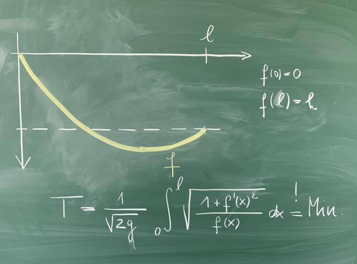

Linear Algebra

-
Description:
The branch of matehmatics concerned with the study of vector spaces, and the scruture preserving maps between these, which are known as linear maps.
Real Analysis

-
Description:
The rigorous foundation and study of sequences, limits, convergence, infinite series, differential- and integral calculus, and other aspects of reals \( \mathbb{R}\).
Complex Function Theory
-
Description:
The study of functions from the complex plane \( \mathbb{C}\) into itself, and, among other things, the various special properties of differentiation and integration in this setting.
Topology
-
Description:
The study of the simplest known set-structure; a specification of open sub-sets, which we call a topology. The structure preserving maps are called continuous.
Differential Geometry
-
Description:
The application of the ideas of differentiability on \( \mathbb{R}\) (and \( \mathbb{C}\)), to other topological spaces. Concepts like parallel transport, geodesics and curvature arise from this field.
Vector Analysis
-
Description:
The extension of the ideas for differential- and integral calculus to vector fields and their generalizations. Important results like Stoke's Theorem results from vector anlysis.
Differential Equations
-
Description:
Equations which relates one or more functions to their various derivatives. Differential equations are ubiquitous in most areas of math and science.
Group Theory
-
Description:
The study of symmetry, general properties of symmetry transformation; both discrete and continuous, and the classification of all finite- and continuous symmetries.
Calculus of Variations

-
Description:
The branch of mathematics concerned with extremization of functions, which themselves take functions as inputs. Such functions are known as functionals.